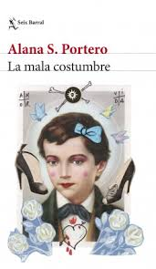

Donde cada reseña tiene su encanto
Donde cada reseña tiene su encanto
Donde cada reseña tiene su encanto
Donde cada reseña tiene su encanto
Leer libros enriquece nuestra mente, despierta la imaginación y fortalece nuestra capacidad de pensar críticamente. A través de la lectura, no solo adquirimos conocimientos y vocabulario, sino que también desarrollamos empatía al ponernos en el lugar de otros personajes y culturas. Leer nos ayuda a relajarnos, a comprender mejor el mundo y a crecer como personas, convirtiéndose en un hábito esencial para el aprendizaje continuo y el desarrollo personal.


El 2024 ha sido un año literario excepcional, marcado por libros que han conmovido y sorprendido al público. En agosto nos vemos, la novela póstuma de Gabriel García Márquez, reveló una historia íntima y melancólica que cautivó a millones. La mala costumbre, de Alana S. Portero, ofreció una poderosa mirada sobre identidad y crecimiento personal, convirtiéndose en un referente de la literatura actual. Por su parte, James, de Percival Everett, reinterpreta un clásico desde una nueva perspectiva, abordando temas como el racismo y la libertad con una narrativa audaz. Tres libros distintos, pero igual de impactantes, que definieron la conversación literaria del año.
Autor: Gabriel García Márquez
Género: Novela breve / Ficción literaria
Publicación: 2024 (póstuma)
Autora: Alana S. Portero
Género: Novela contemporánea / Autoficción
Publicación: 2023 (relevancia continua en 2024)
Autor: Percival Everett
Género: Novela / Revisión histórica / Ficción política
Publicación: 2024
Usuario: Alexander Jhoan Quijia Pillalaza
Fecha:Martes 12 de enero del 2925
Leí este libro sin saber exactamente qué esperar, y la verdad es que me sorprendió mucho. Es una historia tranquila, sin grandes giros, pero con una profundidad emocional que me hizo reflexionar bastante. Ana Magdalena, la protagonista, me pareció muy real: una mujer que, lejos de su rutina, se atreve a escuchar lo que siente y a vivir algo diferente. No es una historia que te atrape por la acción, sino por lo que dice sin decir mucho. Es corta, se lee rápido, pero deja una sensación que permanece. Me gustó por lo íntimo y sincero que se siente.

Usuario: Erick Fernando Lincango Simbaña
Fecha: Viernes 11 de junio de 2024
Este libro me golpeó fuerte. No porque sea dramático, sino porque es muy real. Sentí que estaba leyendo la vida de alguien que podría ser un amigo, una vecina, o incluso yo mismo. La manera en que cuenta lo que significa crecer sintiéndote diferente, en un entorno que no te entiende, me pareció brutalmente honesta. Hay partes que me dolieron, otras que me hicieron sonreír, pero sobre todo me ayudó a entender un poco más a las personas trans y su lucha. Es un libro que recomendaría a cualquiera con mente y corazón abiertos.
Usuario: Ismael Alejandro Gordillo Sotelo
Fecha:Domingo 06 de Julio del 2024
Lo leí por recomendación y fue una experiencia totalmente diferente a lo que suelo leer. Es una historia conocida, pero contada desde el otro lado. Sentí rabia, impotencia y también esperanza al leer la historia de Jim, el esclavo que siempre fue solo un personaje secundario. Aquí tiene voz, pensamiento y emociones, y eso me hizo ver el clásico de otra forma. No es una lectura liviana, pero sí necesaria. Me hizo pensar mucho en cómo se han contado las historias hasta ahora, y en cuántas otras faltan por contarse. Me alegro de haberlo leído.